Filiación Institucional y Publicaciones 2026 (100 % del contenido original intacto)
Integra el símbolo «%» junto a la cifra para una lectura inmediata, limpia y sin saltos de línea.
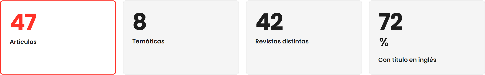
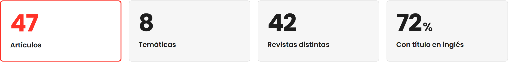
Muestra toda la tabla de un vistazo sin barras de desplazamiento ni cortes de texto, reforzando la nitidez de las barras y las insignias.
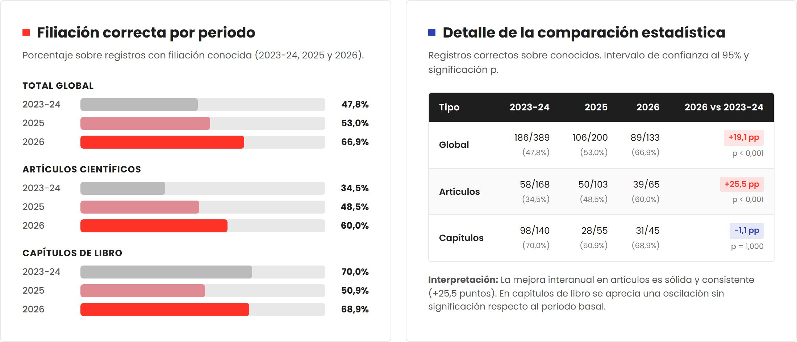
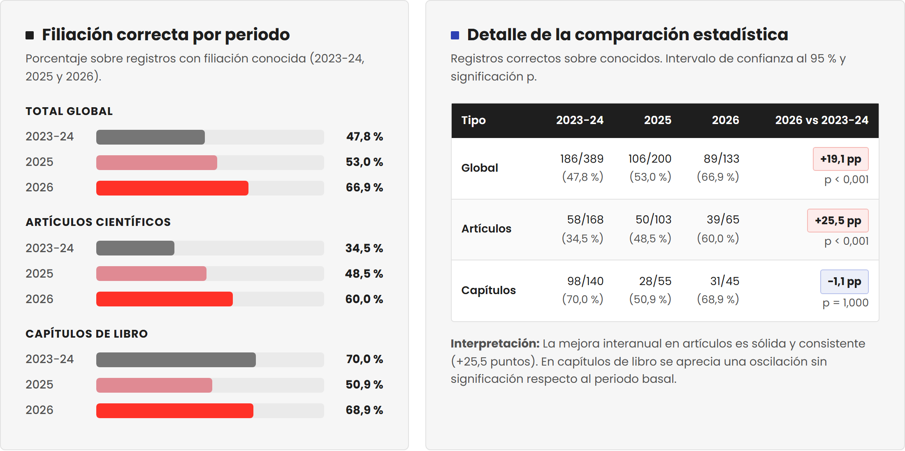
Ordena los cuartiles (Q1 a Q4) en una degradación azul intuitiva de mayor a menor impacto con las cifras visibles en cada tramo.
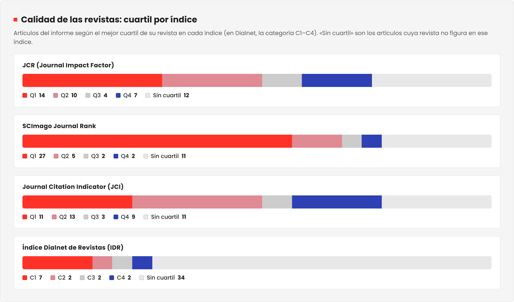
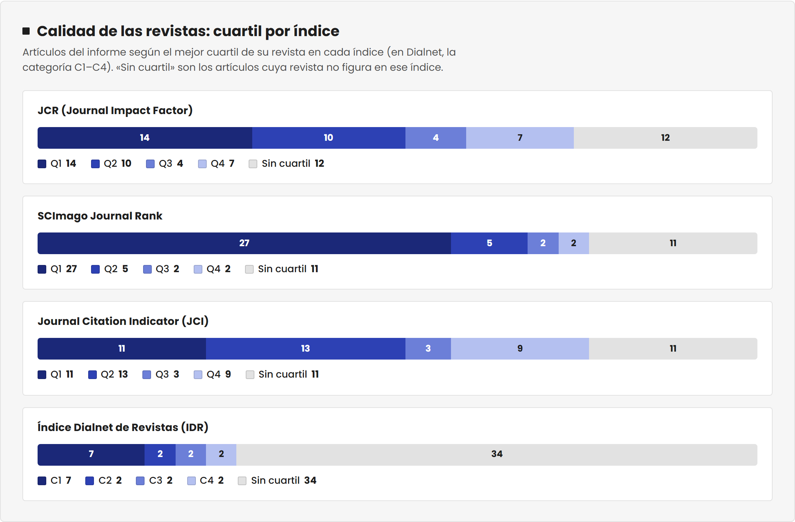
Muestra directamente todos los porcentajes en cada tramo —también en móvil— con contraste de lectura mejorado.
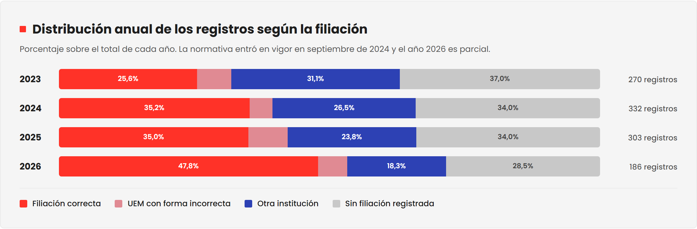
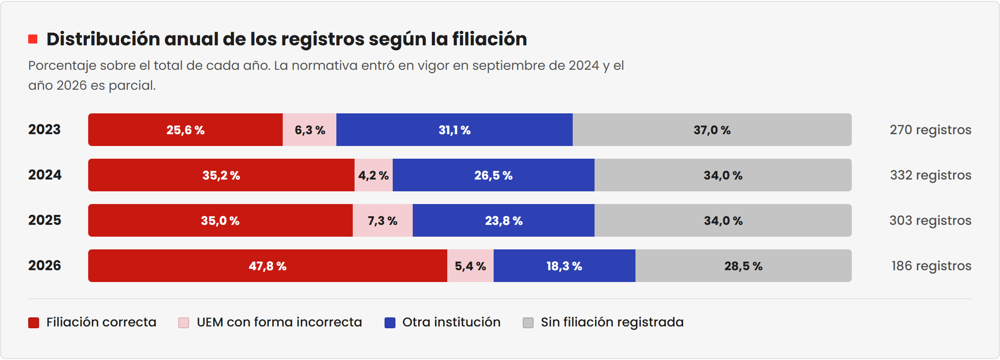
Destaca por igual las dos temáticas colíderes empatadas en primer lugar con 8 capítulos.
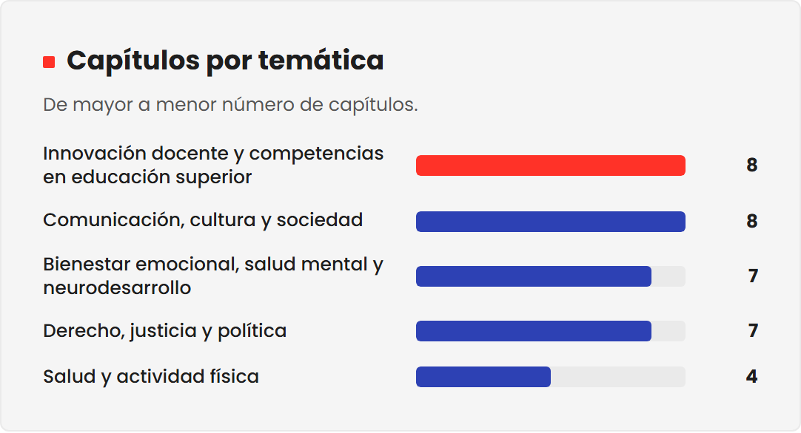
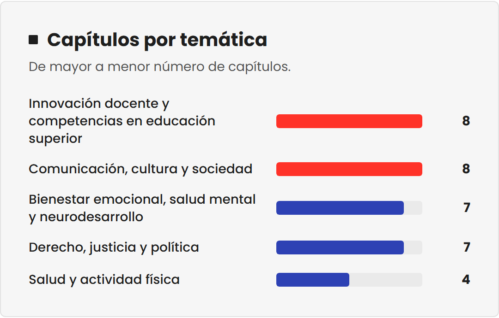
Unifica todas las cifras con coma decimal según la norma del español para dar rigor y consistencia a todo el informe.
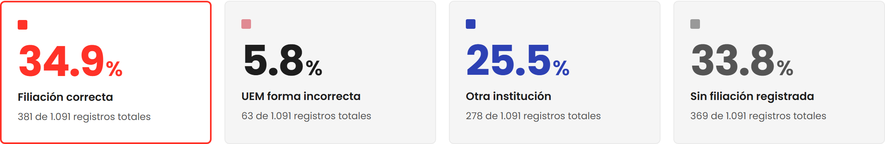
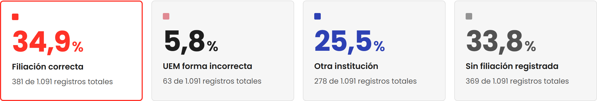
Acota el ancho de línea y amplía el cuerpo del texto para que el mensaje clave se lea sin fatiga visual.
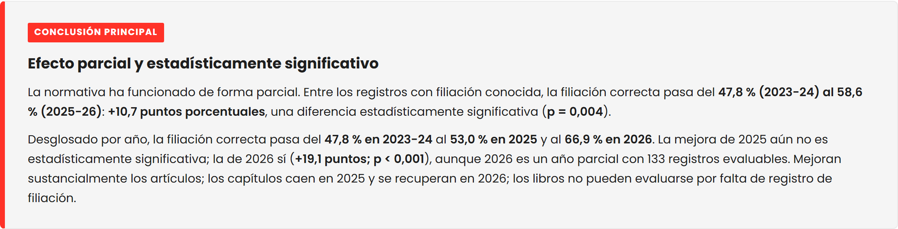
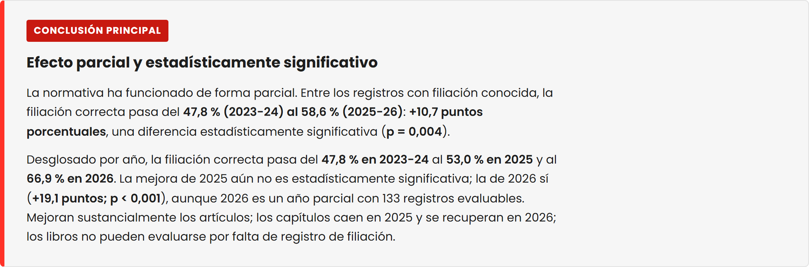
Elimina marcos redundantes y equilibra el uso del rojo para que destaquen únicamente los datos clave.
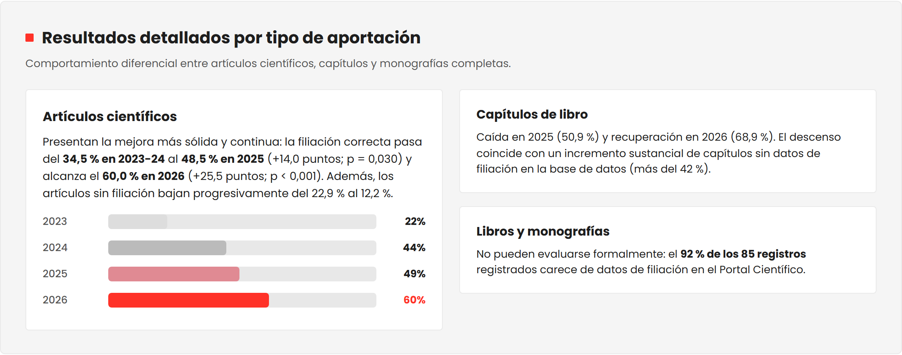
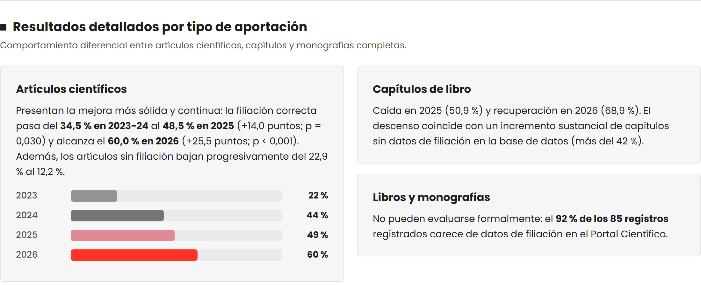